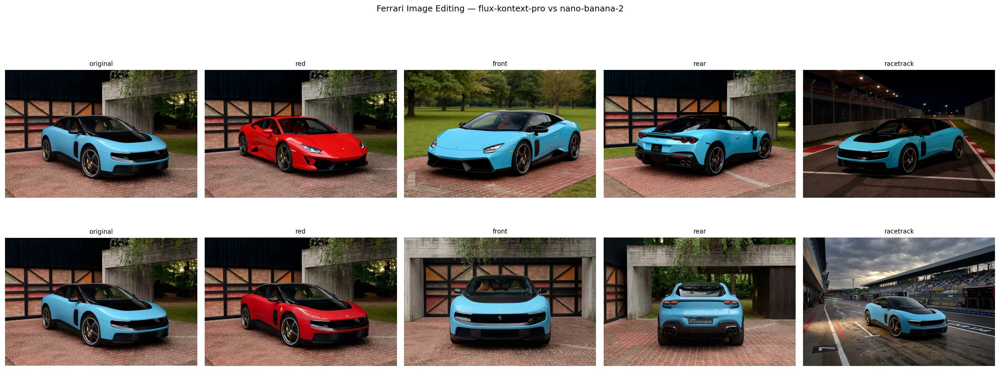

10 - GenAI: Modern Systems
After this lecture you should be able to:
- Explain why pixel-space diffusion is computationally expensive
- Describe the core idea of latent diffusion
- Explain the connection between latent diffusion and VAEs
- Identify the main components of a Stable Diffusion-style system
- Understand why latent representations made high-resolution image generation practical
In Part 2, we saw how diffusion models generate images by starting from noise and gradually denoising. In practical image generation systems, this process is usually not performed directly in pixel space. High-resolution images contain many pixel values, and the denoising network must process them repeatedly over many sampling steps.
Latent diffusion solves this by moving the diffusion process into a compressed representation space. A VAE encoder maps images into latent representations, diffusion is performed in this smaller latent space, and a VAE decoder maps the final latent back to pixels. This is the key idea behind Stable Diffusion-style systems.
1 Motivation
Diffusion models learn to reverse a noising process. In the simplest setting, the model starts from random noise and gradually denoises it into an image:
\[ \mathbf{z}_T \sim \mathcal{N}(0, I) \quad \rightarrow \quad \mathbf{z}_{T-1} \quad \rightarrow \quad \cdots \quad \rightarrow \quad \mathbf{z}_0 \approx \mathbf{x} \]
This gives us the basic generative mechanism. However, a practical image generation system needs more than the abstract denoising idea. It must be efficient enough to generate high-resolution images, support repeated sampling, and respond quickly enough for interactive use.
The central practical question is therefore:
How can we make diffusion efficient enough for high-resolution image generation?
Modern image generators are rarely used only once. In practical workflows, users often generate many candidates, compare results, adjust the prompt, regenerate, edit specific regions, and create variations. The system therefore needs to support repeated sampling, not just one expensive generation.
Efficiency matters because modern image generators may need to produce:
- high-resolution images
- many candidate images
- fast previews
- repeated prompt iterations
- image edits and variations
- batch generations for practical workflows
If every denoising step is expensive, the system becomes slow and costly. This is especially important because diffusion models are iterative: they do not produce the final image in a single forward pass. They repeatedly apply a denoising network over many sampling steps.
1.1 The Pixel-Space Bottleneck
A 512 × 512 RGB image contains:
\[ 512 \times 512 \times 3 = 786{,}432 \]
pixel values.
If diffusion is performed directly in pixel space, the denoising network must operate on a very large representation. Moreover, it does not process this representation only once. It processes noisy image representations repeatedly over many denoising steps.
A rough intuition for the computational cost is:
\[ \text{image size} \times \text{number of denoising steps} \times \text{cost of the denoising network} \]
This is only an intuition, not an exact runtime formula, but it captures the core problem. High-resolution images increase the size of the representation, and diffusion requires many repeated denoising operations. As a result, pixel-space diffusion quickly becomes expensive.
1.2 Resolution Makes the Problem Worse
Increasing the image resolution quickly increases the number of values the model must process.
| Resolution | Number of RGB values |
|---|---|
| 256 × 256 | 196,608 |
| 512 × 512 | 786,432 |
| 1024 × 1024 | 3,145,728 |
A 1024 × 1024 image has four times as many pixel values as a 512 × 512 image. For iterative generation, this matters a lot. The increase affects memory usage, computation, and sampling time.
The core bottleneck is therefore that pixel-space diffusion asks the denoising network to operate directly on a large, high-dimensional representation. This creates three practical problems:
- high memory usage
- slow training and sampling
- expensive high-resolution generation
This leads to the idea of latent diffusion:
Do not run diffusion directly on pixels if a smaller learned representation is sufficient.
2 Latent Diffusion
Pixel-space diffusion is expensive because the denoising network has to operate on a high-dimensional image representation over many sampling steps. A 512 × 512 RGB image already contains
\[ 512 \times 512 \times 3 = 786{,}432 \]
pixel values. If the model denoises directly in pixel space, each denoising step must process a representation of this size. For high-resolution images, repeated sampling, and interactive workflows, this quickly becomes costly.
The key idea behind latent diffusion is to avoid running the diffusion process directly on pixels. Instead, the image is represented in a smaller learned latent space. The diffusion model operates in that latent space, and only the final latent representation is decoded back into pixels.
Stable Diffusion (Rombach et al. 2022) is the canonical example of this idea. It made diffusion-based image generation much more practical and helped popularize open-weight text-to-image generation.

At a high level, Stable Diffusion combines a text encoder, a VAE encoder/decoder, a latent denoising model, and a sampler. The prompt is encoded into a text representation. The diffusion process happens in the latent image space. Finally, a decoder maps the generated latent representation back into pixel space.

This figure captures the main division of labor. The VAE encoder maps images into a compact latent representation. The diffusion model learns to generate or denoise representations in that latent space. The VAE decoder maps the final latent representation back to an image. The text encoder provides semantic conditioning from the prompt.
In pixel-space diffusion, the denoising process can be written schematically as
\[ \mathbf{x}_t \rightarrow \mathbf{x}_{t-1} \rightarrow \cdots \rightarrow \mathbf{x}_0 \]
where the model directly denoises image-like pixel representations. In latent diffusion, the corresponding process is
\[ \mathbf{z}_t \rightarrow \mathbf{z}_{t-1} \rightarrow \cdots \rightarrow \mathbf{z}_0 \]
where \(\mathbf{z}_t\) is a noisy latent representation. The final latent \(\mathbf{z}_0\) is then decoded into an image.
This is where the connection to VAEs becomes important. A VAE-style autoencoder learns two mappings:
\[ \text{Encoder:} \quad \mathbf{x} \rightarrow \mathbf{z} \]
\[ \text{Decoder:} \quad \mathbf{z} \rightarrow \hat{\mathbf{x}} \]
The encoder compresses the image into a latent representation. The decoder reconstructs an image from that representation. Latent diffusion uses this learned latent space as the space where diffusion happens.
The full process can therefore be summarized as:
\[ \mathbf{x} \quad \xrightarrow{\text{VAE encoder}} \quad \mathbf{z} \quad \xrightarrow{\text{diffusion model}} \quad \hat{\mathbf{z}} \quad \xrightarrow{\text{VAE decoder}} \quad \hat{\mathbf{x}} \]
The important point is that the diffusion model does not need to model every low-level pixel detail directly. It learns to generate plausible latent representations. The decoder then turns those latent representations into images.
This separation makes the system more efficient:
- the denoising representation is smaller
- memory usage is reduced
- sampling becomes cheaper
- high-resolution generation becomes more practical
- adaptation and experimentation become easier
A useful way to remember the architecture is:
| Component | Role |
|---|---|
| Text encoder | converts the prompt into semantic conditioning |
| VAE encoder | compresses images into latent space during training |
| Diffusion model | denoises or generates latent representations |
| Sampler | controls the iterative denoising process |
| VAE decoder | converts final latent representation back to pixels |
The main takeaway is:
Stable Diffusion is not a diffusion model that directly draws pixels. It is a latent diffusion system: diffusion happens in a compressed VAE latent space, and the decoder turns the final latent into an image.
This is why latent diffusion made high-resolution diffusion-based image generation much more practical.
3 Modern Architectures and Multimodal Systems
The latent diffusion architecture explains why models such as Stable Diffusion became practical: the expensive denoising process is moved from pixel space into a compressed latent space. This is already a major systems-level improvement. However, modern image generation systems have continued to evolve beyond the original Stable Diffusion-style architecture.
There are two important developments to understand. First, the denoising network itself is changing. Earlier systems commonly used U-Net architectures, while newer systems increasingly use transformer-based denoisers. Second, image generation is becoming more tightly integrated with multimodal interfaces. Modern systems do not only take a text prompt and return an image. They may accept text, images, masks, reference images, previous outputs, or editing instructions, and they may be embedded inside a conversational assistant.
The purpose of this section is not to describe one specific commercial architecture in detail. Many current systems are not fully disclosed. Instead, the goal is to understand the main architectural ideas that explain the direction of modern generative AI systems.
3.1 From U-Net Denoisers to Diffusion Transformers
In the original Stable Diffusion-style setup, the denoising network is usually a U-Net (see Figure 3). This is a natural choice for image-like data. A U-Net processes feature maps at multiple resolutions: the downsampling path captures increasingly global information, while the upsampling path reconstructs spatial detail. Skip connections help preserve fine-grained information across resolutions.

This architecture works well because images have strong local structure. Nearby pixels are usually strongly related, edges and textures are spatially local, and many visual patterns appear at different scales. Convolutional U-Net architectures therefore provide a useful inductive bias for image generation.
However, more recent systems increasingly replace the U-Net denoiser with a transformer-based denoiser (see Figure 4). The basic idea is to represent the noisy image or noisy latent as a sequence of tokens. These tokens may correspond to patches, latent patches, or learned visual tokens. The transformer then predicts how these tokens should be denoised.
Conceptually, this is similar to the transition from convolutional networks to vision transformers in discriminative computer vision. Instead of processing the representation primarily as a spatial feature map, the model processes it as a sequence. Attention allows each token to interact with other tokens, which can be useful for modeling long-range relationships and global structure.
The comparison is summarized below.
| Aspect | U-Net diffusion | Diffusion transformer |
|---|---|---|
| Representation | spatial feature maps | token sequence |
| Main operation | convolution + attention blocks | self-attention + MLP blocks |
| Inductive bias | strong image locality | more general sequence modeling |
| Conditioning | often cross-attention | cross-attention or conditioning tokens |
| Scaling behavior | strong, but architecture-specific | often attractive for large-scale training |
| Multimodal extension | possible | more natural |
The important point is not that transformers are always better. U-Nets remain effective and efficient in many settings. The important point is that transformer-based denoisers fit naturally into a broader trend: text, image, video, and other modalities can all be represented as tokens or token-like latent representations. This makes it easier to build models that combine multiple modalities.
3.2 Why Token-Based Architectures Are Attractive
A token-based representation gives a more uniform interface between modalities. Text is already represented as a sequence of tokens. Images can be represented as patch tokens, latent tokens, or visual embeddings. Video can be represented as tokens across space and time. Reference images, masks, or editing instructions can also be converted into conditioning representations.
This does not mean that all modalities become identical. Text tokens and image tokens still have different origins and structure. But a transformer architecture provides a common computational mechanism: attention over sequences of representations.
This is one reason diffusion transformers and multimodal transformers are attractive for modern systems. They provide a route toward architectures where text, image, and possibly video information can interact more directly.
A simplified view is:
\[ \text{text} \rightarrow \text{text tokens} \]
\[ \text{image or latent} \rightarrow \text{visual tokens} \]
\[ \text{reference image} \rightarrow \text{reference tokens} \]
These representations can then condition the generation process through attention, additional conditioning layers, or joint processing inside a transformer.
3.3 Multimodal Diffusion Systems
A multimodal diffusion system extends the basic text-to-image setup by accepting more than one type of input. Instead of conditioning only on a text prompt, the model may also condition on an image, a mask, a reference subject, an editing instruction, or previous generated content.
This enables workflows that are difficult to achieve with text prompts alone. For example, a user may provide an image and ask the model to change only the background. Or the user may provide a reference image of a product and ask the model to generate advertising images while preserving the product identity. Or the user may iteratively refine a generated image in a conversational interface.
The distinction between the underlying model and the user-facing system becomes important here. A user may experience the system as a single assistant, but internally it may involve several components: a multimodal language model, an image encoder, an image generation model, an editing model, safety filters, retrieval systems, or tool-calling infrastructure.
3.4 How to Explain Systems Like ChatGPT or Gemini
A modern multimodal assistant may combine several capabilities:
- understanding text instructions
- understanding uploaded images
- maintaining conversational context
- planning an edit or generation request
- using a specialized image generation model
- using a specialized image editing model
- checking safety constraints
- returning the result through a unified interface
The user experiences one coherent system. Internally, the system may be modular, unified, or somewhere in between.
This is the main conceptual takeaway:
Modern multimodal generation is not just a model that maps one prompt to one image. It is increasingly a system for understanding, planning, generating, editing, and iterating across modalities.
This perspective also helps explain why modern image generation is moving closer to general AI assistants. The image model is no longer only a standalone generator. It becomes one capability inside a broader multimodal system.
4 Adapting and Personalizing Generative Models
Modern generative models are usually trained as large, general-purpose foundation models. They can generate a wide range of images, styles, and visual concepts, but they are not automatically optimized for a specific project, brand, subject, dataset, or domain.

In practice, this creates a common problem. A base model may be impressive, but still not quite do what we need. It may not know a specific product. It may not reproduce a particular visual style reliably. It may not follow a company’s brand guidelines. It may not generate the kind of domain-specific imagery needed in medicine, manufacturing, architecture, e-commerce, or scientific visualization.

This is where model adaptation becomes important. The question is not only how to generate images, but how much we need to change the behavior of the model for a particular use case.
There is a spectrum of adaptation methods. At one end, we only change the input prompt. At the other end, we update many or all model parameters. Between these extremes are lightweight adaptation methods such as textual inversion, DreamBooth-style personalization, and LoRA.
4.1 The Adaptation Spectrum
The simplest way to adapt a generative model is prompting. We keep the model fixed and only change the text instruction. This is cheap, immediate, and often surprisingly effective. However, prompting is limited. It can guide the model toward concepts it already knows, but it cannot reliably teach the model a new identity, a specific product, or a domain that was poorly represented during training.
At the other end is full fine-tuning. Here, we update many or all parameters of the model on a new dataset. This can be powerful, but it is expensive, requires careful data preparation, and can degrade general model behavior if done poorly.
Most practical adaptation methods sit between these two extremes.
| Method | What changes? | Typical use |
|---|---|---|
| Prompting | only the input text | fast exploration and weak control |
| Negative prompting / guidance | sampling behavior | suppress unwanted attributes |
| Textual inversion | a learned token embedding | introduce a new concept token |
| DreamBooth-style training | parts of the model adapt to a subject | personalize to an object, person, or style |
| LoRA | small low-rank weight updates | efficient style, subject, or domain adaptation |
| Full fine-tuning | many or all model parameters | specialized domains or strong behavioral change |
The practical question is therefore:
What is the smallest intervention that gives enough control for the task?
This question matters because stronger adaptation methods usually require more data, more compute, more engineering effort, and more validation.
4.2 Prompting as the First Adaptation Layer
Prompting should usually be the first adaptation method tried. It is fast and has no training cost. For many use cases, especially early exploration, the best workflow is to generate examples, inspect failures, refine prompts, and decide whether stronger control is actually needed.
Prompting can control many high-level properties:
- subject matter
- visual style
- camera angle
- lighting
- composition
- mood
- level of realism
- output format
For example, the prompt
a studio product photo of a hiking backpack, white background, softbox lighting, high detail, commercial photographyalready encodes subject, scene, lighting, and style. For many simple applications, this may be enough.
However, prompting does not give reliable control over everything. It may fail when we need exact identity preservation, precise spatial layout, consistent branding, or a specific object that the model has never seen. Prompting is also often unstable: small changes in wording can produce noticeably different outputs.
This is why prompting is best understood as the lowest-cost adaptation method, not as a complete solution for all control problems.
4.3 DreamBooth-Style Personalization
DreamBooth-style personalization methods adapt a model so that it can generate a specific subject, object, or style across different contexts. The typical use case is subject preservation: given a small set of images of a particular object or person, the adapted model should generate that subject in new scenes while preserving its identity.
A simplified example is:
a photo of [specific subject] on a beach
a photo of [specific subject] in a studio
a photo of [specific subject] as a product advertisementThe goal is not just to produce visually similar objects, but to preserve enough identity that the generated outputs are recognizable as the same subject.
This is more powerful than prompting because the model is adapted using examples. However, it also introduces risks. With too little data, the model may overfit. With poorly prepared data, it may learn irrelevant background details. If all training images show the object in the same pose or environment, the model may struggle to generalize.
DreamBooth-style methods are therefore useful, but they require careful dataset design. The training images should represent the subject clearly and should avoid unnecessary correlations that the model might memorize.
4.4 Fine-Tuning with LoRA
While pre-trained models are powerful, you often want to adapt them to specific styles, subjects, or domains. Traditional fine-tuning updates all model parameters (billions of weights!), requiring massive memory and compute. LoRA (Low-Rank Adaptation), see Figure 7, offers a far more efficient alternative.
Key idea: Instead of updating the full weight matrix \(W\), LoRA learns a low-rank update \(\Delta W = BA\) where:
- \(B \in \mathbb{R}^{d \times r}\) and \(A \in \mathbb{R}^{r \times k}\)
- \(r \ll \min(d, k)\) (typically \(r = 4\) to \(16\))
- Only \(A\) and \(B\) are trained; original weights \(W\) remain frozen
This reduces trainable parameters by 1000× or more, enabling fine-tuning on a single consumer GPU in hours rather than days. LoRA adapters can be easily shared, combined, and switched, creating a thriving ecosystem of specialized models.
Popular use cases:
- Style transfer: Train on artworks to mimic specific artistic styles
- Subject learning: DreamBooth + LoRA to generate images of specific people/objects
- Domain adaptation: Adapt to specialized domains (anime, architecture, product photography)

4.5 Why LoRA Is Practical
LoRA is attractive for generative models for several reasons. First, it greatly reduces the number of trainable parameters. This lowers memory requirements and makes fine-tuning feasible on more modest hardware. Second, LoRA adapters are small compared with full model checkpoints. They can be stored, shared, versioned, and switched more easily. Third, the same base model can be reused with many different adapters.
This makes LoRA a practical compromise between prompting and full fine-tuning.
Typical LoRA use cases include:
- adapting a model to a visual style
- learning a specific product or subject
- adapting to a domain such as architecture or fashion
- creating brand-consistent image generation
- specializing a model for a narrow type of output
LoRA does not magically solve all adaptation problems. The quality still depends on the base model, the training data, the rank, the layers adapted, the training objective, and the evaluation procedure. But in practice, it is often a strong default when prompting is not enough and full fine-tuning is too expensive.
4.6 Full Fine-Tuning
Full fine-tuning updates many or all parameters of the model. This gives the highest flexibility, but it is also the most demanding option.
Full fine-tuning may be appropriate when the target domain is very different from the pretraining distribution, when strong behavioral changes are required, or when the organization has enough data and compute to support a specialized model. Examples might include medical imaging, satellite imagery, industrial inspection, or highly constrained product imagery.
However, full fine-tuning has several risks:
- it requires more compute
- it requires more data
- it can overfit
- it can reduce general capabilities
- it creates large model artifacts
- it requires careful evaluation and monitoring
For many practical projects, full fine-tuning is not the first choice. A common workflow is to start with prompting, then try structured inputs or editing tools, then use LoRA or another lightweight adaptation method, and only consider full fine-tuning if these are insufficient.
4.7 Choosing an Adaptation Strategy
The choice of adaptation method depends on the gap between the base model and the target use case.
If the model already knows the visual domain and only needs better instructions, prompting may be enough. If the model needs to suppress certain artifacts or follow the prompt more strongly, negative prompting and guidance may help. If the model needs a new concept token, textual inversion may be sufficient. If the model needs to preserve a specific subject, DreamBooth-style personalization or LoRA is more appropriate. If the entire visual domain is different, full fine-tuning or custom training may be required.
A useful decision matrix is:
| Situation | Likely strategy |
|---|---|
| Need quick exploration | prompting |
| Need slightly stronger prompt adherence | guidance / negative prompting |
| Need a lightweight new concept token | textual inversion |
| Need a specific subject or product | DreamBooth-style training or LoRA |
| Need a specific visual style | LoRA |
| Need domain-specific behavior | LoRA or fine-tuning |
| Need strong control in a very different domain | full fine-tuning or custom model training |
The key is to avoid over-engineering. Many projects do not need fine-tuning. They need better prompting, better reference images, better editing workflows, or clearer evaluation criteria. Adaptation should be introduced when there is a specific failure mode that cannot be solved by simpler methods.
4.8 Practical Evaluation of Adapted Models
Adapting a generative model is only useful if the adapted model is evaluated. Visual quality alone is not enough. The relevant evaluation depends on the use case.
For a style adapter, we might ask whether the style is recognizable and consistent. For a product adapter, we might ask whether the product identity is preserved. For an enterprise use case, we might ask whether the generated outputs follow brand, safety, and legal constraints. For a domain-specific model, we might ask whether generated images are realistic according to domain experts.
Useful evaluation questions include:
- Does the adapted model preserve the desired subject or style?
- Does it still respond to different prompts?
- Does it overfit to the training examples?
- Does it introduce artifacts?
- Does it reduce diversity?
- Does it behave safely on unrelated prompts?
- Is the adapter useful enough to justify its maintenance cost?
This is especially important because generative model adaptation can look good in cherry-picked examples. A few impressive outputs do not prove that the adapted model is robust.
5 Practical Use, Deployment Choices, and Responsible Use
After understanding latent diffusion, modern multimodal architectures, and adaptation methods, the final question is practical: how should we actually use these systems in a real project?
For most applied work, we do not train a generative image model from scratch. Instead, we choose an access pattern. We may use a hosted API, an enterprise platform, or an open-weight model. Each choice comes with different tradeoffs around quality, cost, control, privacy, reproducibility, customization, and governance.
This section connects the technical ideas from the previous sections to realistic project decisions. It also closes the lecture by discussing the limitations and responsibilities that come with highly realistic synthetic media.
5.1 Three Practical Access Patterns
There are three common ways to use modern image generation models.
| Access pattern | Examples | Typical motivation |
|---|---|---|
| Hosted API | OpenAI, Google, Replicate, fal.ai | fast prototyping and simple integration |
| Enterprise platform | Vertex AI, Azure, Bedrock | governance, monitoring, access control, cloud integration |
| Open-weight model | Hugging Face Diffusers, ComfyUI, Automatic1111 | control, customization, reproducibility, local/private use |
These categories are not perfectly separate. For example, Replicate can host open-weight models behind an API, and enterprise platforms can provide access to both proprietary and open models. Still, the distinction is useful because it highlights different engineering and governance tradeoffs.
5.2 Hosted APIs
Hosted APIs are often the fastest way to start. They remove most infrastructure concerns. A developer can send a prompt or image editing request and receive a generated image without managing GPUs, model weights, inference servers, or dependency conflicts.
This is attractive for prototypes, internal demos, product experiments, and applications where time-to-value matters more than deep control over the model.
The advantages are clear:
- simple integration
- no local GPU setup
- access to strong models
- relatively predictable interface
- easy scaling for early prototypes
However, APIs also introduce limitations. The model is controlled by the provider. The exact architecture, training data, safety filters, and sampling details may not be visible. Reproducibility may be limited because models can change over time. Costs scale with usage. Data privacy and data retention policies must be checked carefully, especially for sensitive images or customer data.
Hosted APIs are therefore best when the main goal is to build something quickly, test a workflow, or access strong models without operating the infrastructure.
5.3 Enterprise Platforms
Enterprise platforms are useful when generative AI must fit into an organization’s broader cloud, security, and governance environment. Examples include Google Vertex AI, Microsoft Azure, and AWS Bedrock.
The main benefit is not only model access. The main benefit is integration into enterprise workflows:
- identity and access management
- audit logging
- monitoring
- billing and quota control
- compliance processes
- integration with cloud storage and data pipelines
- deployment and lifecycle management
For companies, these features often matter as much as model quality. A model may be technically impressive but unusable if it cannot meet governance, compliance, or data handling requirements.
Enterprise platforms are usually a good choice when the use case involves internal company data, regulated environments, multiple users, production monitoring, or integration with existing cloud infrastructure.
The tradeoff is complexity. Enterprise platforms can require more setup than a simple API, and they may introduce vendor lock-in. They are often less flexible than fully self-managed open-weight workflows, but more manageable from an organizational perspective.
5.4 Open-Weight Models
Open-weight models provide the most control. They allow teams to inspect the model card, choose model versions, run inference locally or on private infrastructure, customize pipelines, and apply adaptation methods such as LoRA.
Common tools include:
- Hugging Face Diffusers
- ComfyUI
- Automatic1111 WebUI
- custom Python inference pipelines
- self-hosted inference services
Open-weight workflows are attractive when customization, privacy, reproducibility, or experimentation matters. They are also useful in teaching, because students can inspect the components of the pipeline more directly: the text encoder, VAE, denoising model, scheduler, prompts, guidance scale, and generated outputs.
However, open-weight models create operational responsibility. Someone must manage dependencies, model downloads, GPU resources, inference speed, security, safety filters, licensing, and deployment. Output quality may also vary widely across models and checkpoints.
Open source gives control, but control creates responsibility. This is a recurring theme in practical machine learning.
5.5 Choosing an Access Pattern
The right access pattern depends on the constraints of the project.
Use a hosted API when speed and convenience are more important than deep control. Use an enterprise platform when governance and integration are central. Use open-weight models when customization, privacy, reproducibility, or research flexibility matter most.
A simple decision table is:
| Criterion | Hosted API | Enterprise platform | Open-weight model |
|---|---|---|---|
| Setup effort | low | medium | medium to high |
| Infrastructure control | low | medium | high |
| Model transparency | low | medium | higher, depending on model |
| Customization | limited | medium | high |
| Privacy control | provider-dependent | governed | can be local/private |
| Reproducibility | limited | medium | high if versions are fixed |
| Governance | provider-dependent | strong | self-managed |
| Cost structure | pay per use | platform and usage cost | hardware and maintenance |
| Best for | prototypes | production in organizations | research, control, adaptation |
The important practical point is that the “best” model is not always the best choice. The best choice depends on the use case, constraints, and operating environment.
5.6 Generated Images Are Not Evidence
The final part of the lecture should emphasize a central limitation:
A generated image can be plausible without being true.
Modern image generation systems can create images that look photographic, coherent, and emotionally convincing. This does not mean that the depicted event happened, that the object exists, or that the visual details are accurate.
This matters because images have traditionally been treated as evidence. Synthetic imagery weakens that assumption. Even if people know that image generation exists, realistic images can still influence perception, memory, and trust.
In practical terms, generated images should not be used as factual evidence unless their provenance can be verified. This is especially important for journalism, legal contexts, scientific communication, political communication, medical communication, and any high-stakes domain.
5.7 Hallucination in Image Generation
Hallucination is often discussed for language models, but image models can hallucinate too.
They may invent:
- objects
- text
- logos
- identities
- physical relationships
- medical or technical details
- impossible geometry
- misleading context
The output may look visually convincing while being factually wrong. For example, a generated product image may include plausible but nonexistent features. A generated street scene may show signs or architecture that never existed. A generated scientific illustration may look authoritative while being anatomically or technically incorrect.
This is why visual plausibility should not be confused with correctness.
5.8 Synthetic Data: Useful but Risky
Synthetic data is an important application of generative models. It can be useful when real data is scarce, labels are expensive, rare cases are underrepresented, or privacy concerns limit data collection.
Examples include:
- generating rare object poses
- augmenting defect detection datasets
- simulating unusual lighting conditions
- creating training examples for early prototypes
- generating privacy-preserving examples for demonstrations
However, synthetic data also creates risks. If models are trained on increasing amounts of synthetic data without careful filtering, artifacts can be amplified. Diversity can decrease. The generated distribution may drift away from the real data distribution. Models may start learning the mistakes of previous models.
This problem is sometimes discussed as synthetic data pollution or model collapse. The exact outcome depends on the data mixture, filtering, training setup, and evaluation procedure, but the general warning is simple: synthetic data should be validated, not assumed to be beneficial.

The practical question is therefore not whether synthetic data is good or bad. The practical question is whether a specific synthetic dataset improves performance on the real target distribution.
5.9 Bias in Generated Images
Generative models learn from large-scale datasets, and large-scale datasets reflect the biases of the world and the biases of data collection. These biases can appear in generated outputs.
A model may associate certain occupations with certain genders. It may represent beauty, professionalism, wealth, poverty, or danger in stereotyped ways. It may overrepresent some cultures and underrepresent others. It may produce different levels of realism or dignity for different demographic groups.
This is not only a technical issue. It affects how generated images shape expectations, reinforce stereotypes, and influence communication.


For practical work, bias evaluation should be tied to the use case. A creative toy application has different risks than a hiring platform, educational tool, public communication campaign, or medical assistant. But in all cases, generated outputs should be inspected critically rather than treated as neutral.
5.10 Provenance, Watermarking, and Detection
As synthetic images become more realistic, provenance becomes increasingly important. Provenance asks where an image came from, who created it, whether it was edited, and whether the editing history can be verified.
Relevant questions include:
- Was the image captured by a camera or generated by a model?
- Was it edited after capture?
- Which parts were modified?
- Is there metadata describing the origin?
- Is there a watermark or content credential?
- Can the source be cryptographically verified?

There are several possible approaches:
- visible watermarks
- invisible watermarks
- metadata-based provenance
- cryptographic signatures
- synthetic image detectors
- content credentials
None of these is perfect. Metadata can be removed. Watermarks can sometimes be attacked. Detectors can fail under distribution shift or adversarial manipulation. Provenance is therefore best understood as a system-level problem rather than a single model-level solution.
5.11 Copyright and Licensing
Generated images also raise copyright and licensing questions. These questions can concern the training data, the model weights, the generated outputs, and any adapters or fine-tuned checkpoints used in the workflow.
Important questions include:
- What data was used to train the model?
- Is the model license compatible with the intended use?
- Can outputs be used commercially?
- Could outputs resemble protected training examples?
- Are there restrictions on generated content?
- Are LoRA adapters or fine-tuned models licensed separately?
- Are reference images owned or licensed by the user?
For professional use, these questions should be addressed explicitly. From an engineering perspective, licensing is part of the model selection process, not an afterthought.
5.12 Practical Responsibility Checklist
Before using generated images in a project, it is useful to ask a few basic questions.
First, what is the risk level of the use case? A playful internal prototype is different from a medical, legal, political, or journalistic use case.
Second, could the image mislead people? If so, labeling, provenance, and review become more important.
Third, are there identity, privacy, or consent issues? This matters especially when generating or editing images of people.
Fourth, are there copyright or licensing constraints? This applies to the base model, reference images, generated outputs, and adapters.
Fifth, could the output reinforce stereotypes or biased visual associations? If the output will be public or influence decisions, this needs careful review.
Finally, can the result be verified? If the image is meant to support a factual claim, visual plausibility is not enough.